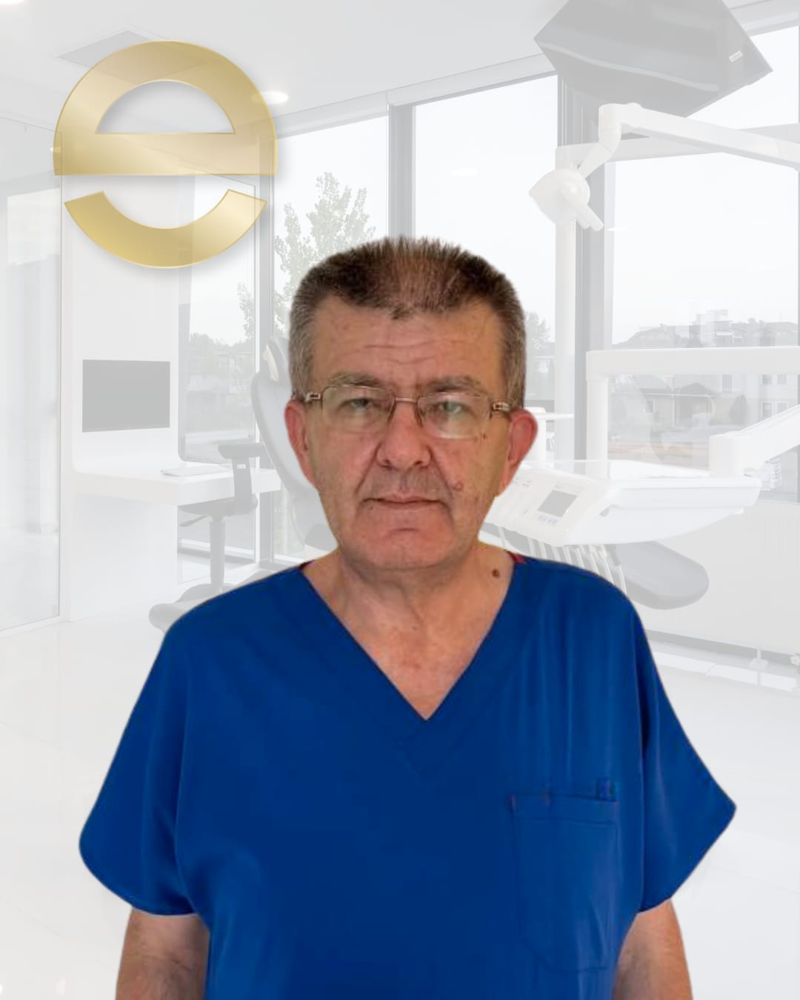
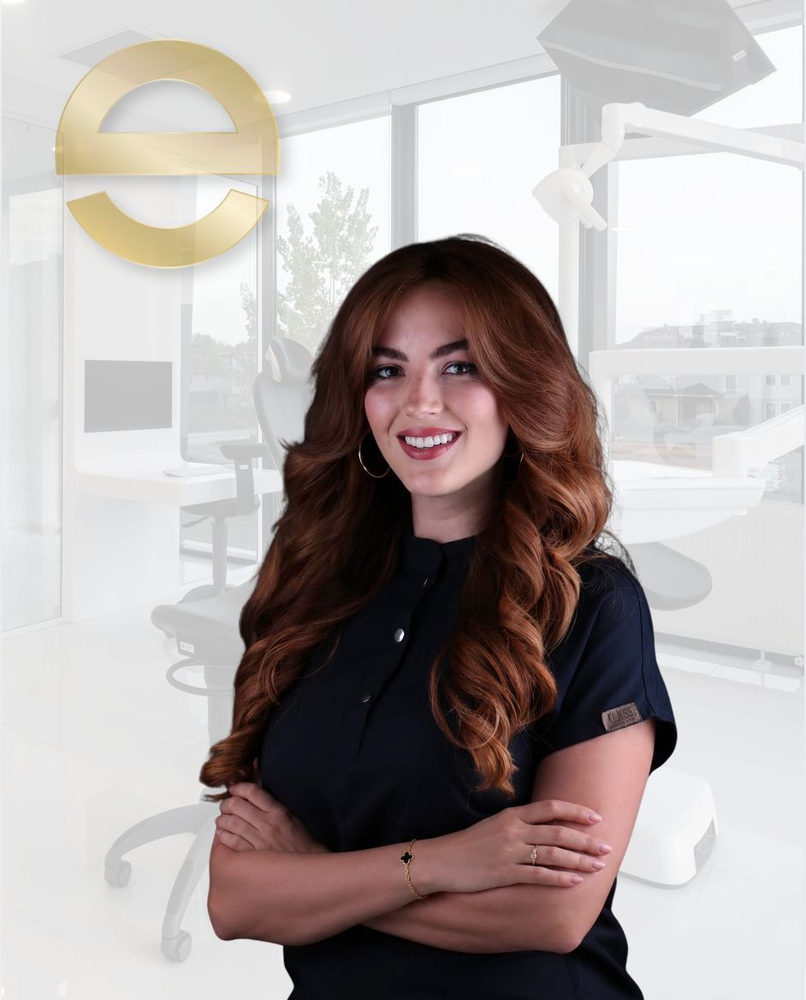
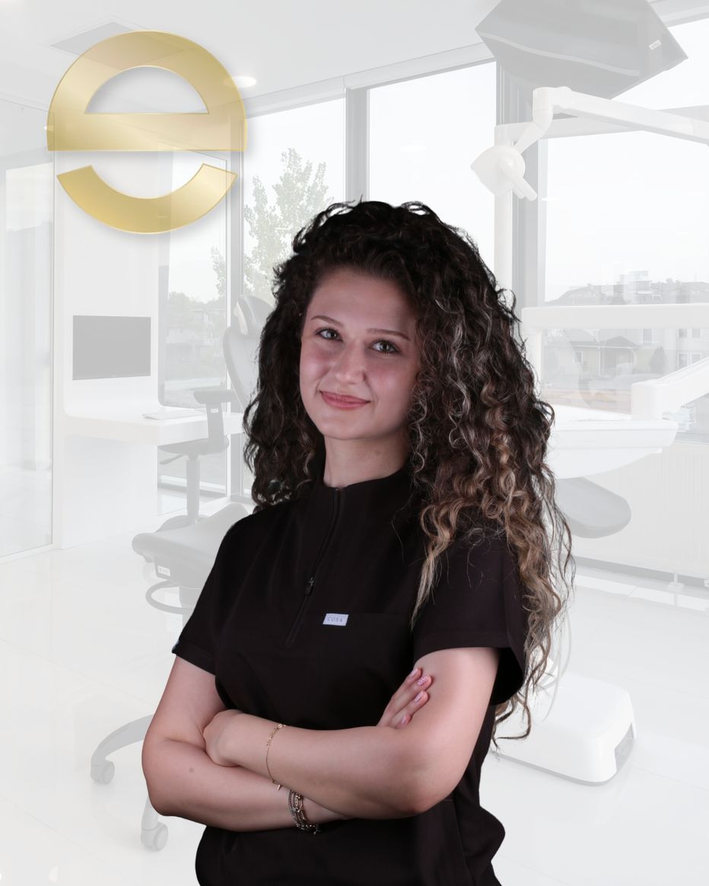

صالات انتظار واسعة وهادئة
مساحات استراحة بإضاءة طبيعية تمنح المريض الهدوء والسكينة.
نمنحك الوقت الكافي للاستماع إليك، ونخطط جميع مراحل العلاج بوضوح في الزيارة الأولى مع مراعاة راحتك النفسية والطبية.

فرع سرديفان الرئيسي · غرف علاج حديثة وهادئة
İstiklal Mahallesi 2. Cadde No: 13, 54050 Serdivan / Sakarya
Yenidoğan Mahallesi Fabrika Caddesi No: 33, 54100 Adapazarı / Sakarya
الإثنين–الجمعة: ٠٨:٣٠ – ١٩:٠٠ · السبت: ٠٨:٣٠ – ١٨:٠٠ · هاتف: 0 (264) 606 00 60
تم تصميم كل ركن في عيادتنا بعناية لتكون زيارتك لطبيب الأسنان تجربة هادئة ومريحة.
مساحات استراحة بإضاءة طبيعية تمنح المريض الهدوء والسكينة.
عيادات مجهزة بتقنيات التصوير الرقمي ومعايير التعقيم.

بيئة ودودة تساعد الأطفال على حب زيارة طبيب الأسنان.

سهولة الوصول في كل من سرديفان (الشارع الثاني) وأدابازاري (شارع فابريكا).
عمليات التشخيص والعلاج التي يتم تقييمها من قبل أطبائنا وأخصائيينا وفقاً لاحتياجاتكم الطبية. (صور توضيحية تمثيلية · المصدر: أرشيف إيف ديش التعليمي)
تُجرى جراحات الفكين المتقدمة وعلاجات الأطفال والبالغين الشاملة تحت التخدير العام والتهدئة الواعية في غرفة عمليات مجهزة بالكامل بإشراف د. سيت يلماز ود. غوكهان جديكلي.
نستخدم في علاج العصب وإعادته والحشوات التجميلية مجهر عمليات إلكترونياً عالي الدقة لمعالجة القنوات الدقيقة وحواف الترميم غير المرئية بالعين المجردة.
يدعم نظام تحليل الصور بالذكاء الاصطناعي قراءة صور البانوراما والأشعة ثلاثية الأبعاد لتحديد القناة العصبية والجيوب والجذور بدقة وسرعة عالية.
بدلاً من قوالب المقاسات التقليدية، نأخذ المقاس رقمياً خلال ثوانٍ بجهاز CEREC والماسح الضوئي ثلاثي الأبعاد ونصنع التركيبات الخزفية بدقة الميكرون.

تعويض الأسنان المفقودة وظيفياً، خلع الأسنان المطمورة وجراحة الفك.

علاج قنوات الجذور للحفاظ على الأسنان الطبيعية المصابة بالتسوس أو الالتهاب.

تصحيح إطباق الأسنان والفكين باستخدام التقويم الثابت أو القوالب الشفافة.

تشخيص وعلاج التهابات اللثة والحفاظ على الأنسجة الداعمة للأسنان.

تركيبات الزيركونيوم والبورسلين والتعويضات الثابتة والمتحركة للأسنان المفقودة.

التطبيقات الوقائية وعلاج ومتابعة الأسنان اللبنية والدائمة الشابة لدى الأطفال.

الحشوات التجميلية المدعومة بالمسح الرقمي والترميمات المحافظة.

إجراء علاجات الأسنان تحت التخدير الواعي أو العام بإشراف أخصائي التخدير والإنعاش.
يقوم أطباؤنا وفريقنا السريري بإجراء التقييم الطبي والتوجيه المناسب لاحتياجاتكم.

أخصائي جراحة الفم والفكين
فرع سرديفان · السيرة الذاتية ←
طبيب أسنان
فرع سرديفان · السيرة الذاتية ←
بروفيسور أخصائي علاج جذور الأسنان
فرع سرديفان · السيرة الذاتية ←
أخصائي علاج جذور الأسنان
فرع سرديفان · السيرة الذاتية ←
أخصائي تقويم الأسنان
فرع سرديفان · السيرة الذاتية ←
أخصائي طب أسنان الأطفال
فرع سرديفان · السيرة الذاتية ←
أخصائية طب أسنان الأطفال
فرع سرديفان · السيرة الذاتية ←
أخصائية أمراض اللثة
فرع سرديفان · السيرة الذاتية ←
أخصائي تعويضات الأسنان
فرع سرديفان · السيرة الذاتية ←
أخصائي التخدير والإنعاش
فرع سرديفان · السيرة الذاتية ←
طبيب أسنان
فرع سرديفان · السيرة الذاتية ←
طبيب أسنان
فرع سرديفان · السيرة الذاتية ←
طبيب أسنان
فرع سرديفان · السيرة الذاتية ←
طبيبة أسنان
فرع سرديفان · السيرة الذاتية ←
طبيبة أسنان
فرع سرديفان · السيرة الذاتية ←
طبيبة أسنان (في إجازة)
فرع سرديفان · السيرة الذاتية ←
طبيبة أسنان
فرع سرديفان · السيرة الذاتية ←
طبيبة أسنان
فرع سرديفان · السيرة الذاتية ←
طبيب أسنان
فرع أدابازاري · السيرة الذاتية ←
طبيب أسنان
فرع أدابازاري · السيرة الذاتية ←

تواصل معنا عبر الهاتف أو واتساب لاختيار الفرع والوقت المناسب لك.
يستمع الطبيب إليك ويتم إجراء الأشعة البانورامية أو ثلاثية الأبعاد عند الحاجة الطبية.
نشاركك الخيارات العلاجية المتاحة والجدول الزمني بشكل واضح ومفهوم.
يبدأ العلاج بموافقتك مع متابعة دورية منتظمة بعد الإجراء.
يتوفر التصوير البانورامي الرقمي في كلا الفرعين والتصوير ثلاثي الأبعاد في فرع سرديفان، مما يتيح مشاركة خطة العلاج في نفس اليوم في معظم الحالات.
يتم إجراء هذه المعالجات في فرع سرديفان للمرضى المؤهلين طبياً من الأطفال والبالغين تحت تقييم وإشراف أخصائي التخدير والإنعاش د. جوكهان جيديكلي.
فرع سرديفان: İstiklal Mah. 2. Cadde No: 13, 54050 Serdivan/Sakarya. فرع أدابازاري: Yenidoğan Mah. Fabrika Cad. No: 33, 54100 Adapazarı/Sakarya. هاتف: 0 (264) 606 00 60 · جوال: 0 (545) 606 00 69.
فريق الاستقبال في خدمتكم من الإثنين إلى الجمعة (٠٨:٣٠–١٩:٠٠) ويوم السبت (٠٨:٣٠–١٨:٠٠).